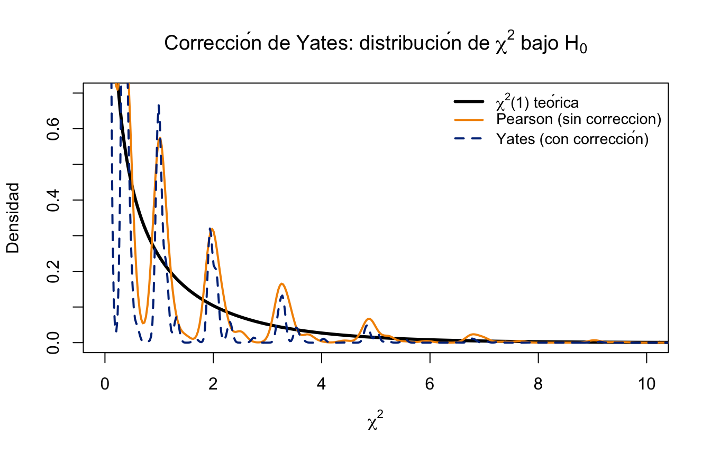
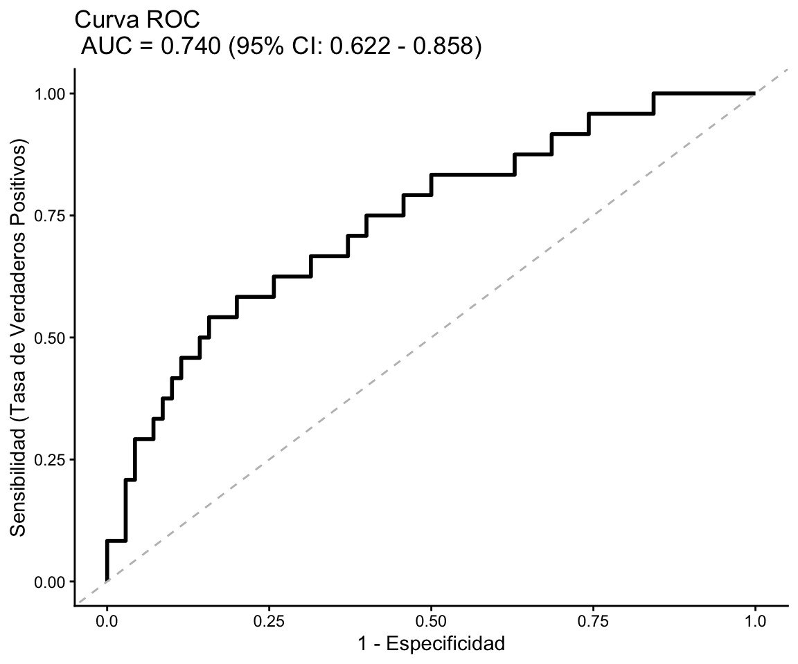

# Análisis de tablas 2x2
# ----------------------
# Frecuencias observadas
Fumador No fumador Total
Con osteoporosis 44 9 53
Sin osteoporosis 26 15 41
Total 70 24 94
# Test Chi-cuadrado para un estudio retrospectivo
χ² = 4.651, gl = 1, p = 0.031, (cpc = 1)
Validez: Frecuencia mínima esperada = 10.47 > 7.7
Test exacto de Fisher (bilateral): p = 0.035
--- Otros criterios χ²:
χ² = 4.673, gl = 1, p = 0.054, (sin cpc)
χ² = 3.699, gl = 1, p = 0.054, (cpc de Yates = 47.00)
# Medidas de asociación para un estudio retrospectivo
Riesgo atribuible*:
Ra=0.406; 95%-IC(Ra)= (0.082, 0.615)
* La estimación de Ra para estudios retrospectivos es una aproximación válida si la prevalencia de la enfermedad es baja: P(E) < 10%
Razón del producto cruzado (odds ratio):
OR=2.821; 95%-IC(OR)= (1.070, 7.013)
* La estimación para OR sirve de aproximación al riesgo relativo siempre que la prevalencia de la enfermedad sea P(E) < 10% 11 Semana 11 — Análisis de Datos Categóricos
En estadística médica y epidemiológica, muchas variables de interés son categoricas: enfermedad (sí/no), exposición a un factor de riesgo (presente/ausente), grupo de tratamiento, estadio clínico. Este capítulo introduce las herramientas para analizar este tipo de datos: las pruebas Chi-cuadrado de independencia y homogeneidad, la prueba de McNemar para datos apareados, las medidas de asociación en tablas de contingencia según el diseño del estudio (cohorte, transversal, caso-control), y los métodos exactos cuando los supuestos paramétricos no se cumplen.
11.1 Variables Categóricas y Tablas de Contingencia
Una tabla de contingencia es una representación matricial de las frecuencias conjuntas de dos o más variables categóricas. Es la base del análisis de datos categóricos. La tabla 2x2 es un caso particular de tablas de contingencia, que pueden tener más de dos categorías en filas y columnas. Por ejemplo, una tabla 3x4 podría analizar la asociación entre un factor de riesgo con tres niveles (bajo, medio, alto) y un resultado con cuatro categorías (ausente, leve, moderado, severo). En estos casos, el análisis se realiza utilizando pruebas de Chi-cuadrado generalizadas para tablas r×c, que evalúan la independencia entre las variables categóricas sin necesidad de reducirlas a dicotómicas.
11.1.1 Tabla 2×2: Estructura y Notación Epidemiológica
La tabla 2×2 es el caso más frecuente en epidemiología y ensayos clínicos:
| Resultado: Sí | Resultado: No | Total | |
|---|---|---|---|
| Exposición: Sí | \(a\) | \(b\) | \(a+b\) |
| Exposición: No | \(c\) | \(d\) | \(c+d\) |
| Total | \(a+c\) | \(b+d\) | \(n\) |
Donde:
- \(a\) = expuestos con resultado positivo (casos expuestos)
- \(b\) = expuestos sin resultado
- \(c\) = no expuestos con resultado positivo
- \(d\) = no expuestos sin resultado
- \(n = a + b + c + d\) = total de observaciones
Advertencia
Sin embargo, hay circunstancias donde la tabla es presentada transpuesta, es decir, con la enfermedad en las filas y la exposición en las columnas. En este caso, la interpretación de los elementos de la tabla se mantiene pero se debe tener cuidado al calcular las medidas de asociación (RR, OR) para no invertir los grupos. En general, lo más común es encontrar la enfermedad en las columnas y la exposición en las filas, pero siempre es importante verificar la disposición de los datos antes de realizar los cálculos.
Tabla 2x2 (transpuesta):
| Exposición: Sí | Exposición: No | Total | |
|---|---|---|---|
| Resultado: Sí | \(a\) | \(c\) | \(a+c\) |
| Resultado: No | \(b\) | \(d\) | \(b+d\) |
| Total | \(a+b\) | \(c+d\) | \(n\) |
Nota: En este formato, \(a\) representa los casos expuestos, \(c\) los casos no expuestos, \(b\) los controles expuestos y \(d\) los controles no expuestos y es el que se utiliza con el paquete BioEstatR
11.1.2 Tablas r×c Generalizadas
Para \(r\) categorías de fila y \(c\) categorías de columna, la tabla es de dimensión \(r \times c\) con frecuencias observadas \(O_{ij}\), marginales de fila \(O_{i\cdot} = \sum_j O_{ij}\) y de columna \(O_{\cdot j} = \sum_i O_{ij}\).
11.2 Prueba χ² de Independencia
La prueba Chi-cuadrado de independencia contrasta si dos variables categóricas son estadísticamente independientes en la población.
11.2.1 Hipótesis
\(H_0: \text{las variables son independientes}\)
\[\quad \Leftrightarrow \quad P(X = i,\, Y = j) = P(X = i)\,P(Y = j)\]
\[H_1: \text{las variables no son independientes (están asociadas)}\]
11.2.2 Frecuencias Esperadas Bajo \(H_0\)
Si \(H_0\) es verdadera, las frecuencias esperadas son:
\[E_{ij} = \frac{O_{i\cdot}\, \cdot\, O_{\cdot j}}{n}\]
AdvertenciaEstadístico: Pearson χ²
\[\chi^2 = \sum_{i=1}^r \sum_{j=1}^c \frac{(O_{ij} - E_{ij})^2}{E_{ij}}\]
Bajo \(H_0\): \(\chi^2 \sim \chi^2_{(r-1)(c-1)}\) (asintóticamente).
Para tabla 2×2: \((r-1)(c-1) = 1\) grado de libertad.
Condición de validez: Todas las frecuencias esperadas deben ser \(E_{ij} \geq 5\). Si alguna es menor, usar la corrección de Yates o la prueba exacta de Fisher.
11.2.3 Cálculo Manual para Tabla 2×2
Para tabla 2×2 con notación \((a, b, c, d)\):
\[\chi^2 = \frac{n(ad - bc)^2}{(a+b)(c+d)(a+c)(b+d)}\]
11.2.4 Ejemplo Médico: Tabaquismo y Osteoporosis
TipEjemplo: tabla2x2() — datos osteo (Fac. Medicina UGR)
Analizamos la asociación entre tabaquismo (tabaco) y osteoporosis del cuello femoral (osteo_cue) en 94 pacientes diabéticos en un estudio ficticion de casos y controles usando el software BioEstatR. Notese que la exposición debe ser introducida por columnas y la enfermedad en las filas. Este es el consenso para este programa pero en general lo más frecuente es encontrar la enfermedad en las columnas y la exposicion en las filas de la tabla de 2x2 como se ha comentado anteriormente.
Comprobación manual de \(E_{ij}\): \[E_{11} = \frac{53 \times 70}{94} = 39.47, \quad E_{12} = \frac{53 \times 24}{94} = 13.53\] \[E_{21} = \frac{41 \times 70}{94} = 30.53, \quad E_{22} = \frac{41 \times 24}{94} = 10.47\]
Minima frecuencia esperada: \(E_{22} = 10.47 > 5\) ✓ (condición de validez cumplida).
NotaInterpretación
El estadístico χ² = 4.65 con 1 grado de libertad produce p = 0.031 < 0.05, rechazando la hipótesis nula de independencia. Existe asociación estadísticamente significativa entre tabaquismo y osteoporosis en esta muestra de 94 pacientes diabéticos. Los casos con osteoporosis de la cabez del cuello del femur presentan una odds ratio de 2.82 (IC 95%: 1.07–7.01), indicando aproximadamente 2.8 veces mayor probabilidad de exposición al hábito tabaquico comparado con los controles sin osteoporosis. En el contexto clínico, esta asociación es relevante para estratificar riesgo en pacientes diabéticos, sugiriendo que el cese del tabaquismo podría ser una intervención preventiva importante en esta población de alto riesgo metabólico.
11.3 Prueba χ² de Homogeneidad
La prueba de homogeneidad contrasta si la distribución de una variable categórica es la misma en \(k\) poblaciones o grupos predefinidos. Matemáticamente usa el mismo estadístico \(\chi^2\), pero el diseño del estudio es diferente.
11.3.1 Independencia vs. Homogeneidad
| Aspecto | Independencia | Homogeneidad |
|---|---|---|
| Muestreo | Muestra única | \(k\) muestras independientes |
| \(H_0\) | Independencia entre variables | Igual distribución en \(k\) grupos |
| Ejemplo | ¿Tabaquismo y cáncer relacionados? | ¿Mismo % de curación en 3 tratamientos? |
11.3.2 Procedimiento
Se aplica el mismo estadístico \(\chi^2 = \sum \frac{(O_{ij}-E_{ij})^2}{E_{ij}}\) con \((r-1)(c-1)\) grados de libertad.
TipEjemplo: tablarxc() — eficacia de tratamiento en 3 grupos
Ensayo clínico con 3 grupos de tratamiento (Control, Dosis baja, Dosis alta) y resultado binario (Curado/No curado):
# Test Chi-cuadrado para tablas RxC
# ---------------------------------
# Frecuencias observadas
Curado No_curado Total
Control 20 30 50
Dosis_baja 35 25 60
Dosis_alta 45 15 60
Total 100 70 170
# Test chi-cuadrado
Validez: Frecuencia mínima esperada = 20.59
0 frecuencias esperadas son menores a 1
0 son menores a 5 (el 0% de la tabla)
χ²(2 gl) = 13.802, p = 0.001
NotaInterpretación
El estadístico χ² = 13.802 con 2 grados de libertad produce p < 0.001, rechazando la hipótesis nula de homogeneidad entre grupos. La distribución de curación no es homogénea entre los 3 grupos de tratamiento (Control: 40%, Dosis baja: 58%, Dosis alta: 75%). Los resultados demuestran que la dosis alta de tratamiento se asocia significativamente con tasas de curación más altas comparado con control y dosis baja. Este patrón dosis-respuesta es clinicamente relevante y sugiere que la escalada de dosis podría optimizar eficacia, aunque el balance entre beneficio y tolerabilidad debe evaluarse conjuntamente en la toma de decisiones terapéuticas.
11.4 Condiciones de Aplicación y Alternativas
11.4.1 Condición de Frecuencias Esperadas
La regla clásica de Cochran (1954) exige, para que la aproximación \(\chi^2 \sim \chi^2_{(r-1)(c-1)}\) sea válida, que todas las frecuencias esperadas \(E_{ij}\) sean \(\geq 5\) en una tabla 2×2 y que, en tablas \(r\times c\), al menos el 80% de las \(E_{ij}\) sean \(\geq 5\) y ninguna \(< 1\).
Sin embargo, este umbral único es excesivamente conservador. La escuela granadina de bioestadística (Martı́n Andrés & Luna del Castillo (2004); Martı́n Andrés & Silva Mato (1994)) ha demostrado, mediante estudios de simulación extensivos, que el valor mínimo de \(E_{ij}\) que mantiene un error de tipo I cercano al nominal depende del tamaño muestral y del diseño del estudio:
ImportanteValores mínimos de \(E_{ij}\) recomendados — Tablas 2×2
| Tamaño muestral \(n\) | Diseño con un margen fijo (cohortes, caso-control) | Diseño con ambos márgenes libres (transversal, prevalencia) | Prueba recomendada |
|---|---|---|---|
| \(n \leq 20\) | — | — | Fisher exacta (siempre) |
| \(20 < n \leq 40\) | \(E_{\min} \geq 5\) | \(E_{\min} \geq 5\) | \(\chi^2\) con corrección de Yates |
| \(40 < n \leq 100\) | \(E_{\min} \geq 3\) | \(E_{\min} \geq 4\) | \(\chi^2\) de Pearson (sin corrección) |
| \(100 < n \leq 200\) | \(E_{\min} \geq 2\) | \(E_{\min} \geq 3\) | \(\chi^2\) de Pearson |
| \(n > 200\) | \(E_{\min} \geq 1\) | \(E_{\min} \geq 2\) | \(\chi^2\) de Pearson |
| Ambos márgenes fijos (raro) | — | — | Fisher exacta (test condicional óptimo) |
NotaCuando el diseño es de “margen fijo” vs. “márgenes libres”
- Un margen fijo (lo más habitual en epidemiología): el investigador fija a priori el tamaño de los grupos de comparación.
- Cohortes: se fija el número de expuestos y no expuestos; se observa la incidencia.
- Caso-control: se fija el número de casos y controles; se observa la exposición.
- Ambos márgenes libres: el muestreo es transversal/de prevalencia y solo se fija \(n\) total; los dos márgenes (exposición y enfermedad) son aleatorios.
- Ambos márgenes fijos: situación poco frecuente en investigación clínica (p.ej., experimento controlad como es el caso del té de Fisher). Es la única en la que la prueba exacta de Fisher es el test condicional óptimo desde un punto de vista frecuentista.
Para tablas \(r\times c\) con \(r\) o \(c > 2\), la regla práctica recomendada por estos autores es: \(\geq 80\%\) de las \(E_{ij}\) por encima del umbral correspondiente al \(n\) total (columna apropiada), y ninguna \(E_{ij} < 1\). Para detalles teóricos y simulaciones que sustentan estos umbrales, véase Martı́n Andrés & Luna del Castillo (2004).
11.4.2 Corrección de Continuidad de Yates (Tabla 2×2)
El estadístico \(\chi^2\) de Pearson es una suma de términos calculados sobre frecuencias enteras que se aproxima por la distribución continua \(\chi^2_{(r-1)(c-1)}\). La corrección de continuidad de Yates reduce el estadístico para mejorar la aproximación:
NotaEstadístico: \(\chi^2\) de Yates (con corrección de continuidad)
Para una tabla 2×2 con frecuencias \(a, b, c, d\):
\[\chi^2_{\text{Yates}} = \frac{n\left(|ad - bc| - \dfrac{n}{2}\right)^2}{(a+b)(c+d)(a+c)(b+d)}\]
- Se aplica cuando alguna \(E_{ij} \in [5, 10)\)
- Siempre da \(\chi^2_{\text{Yates}} \leq \chi^2_{\text{Pearson}}\) → p-valor más conservador
- En R:
chisq.test(tabla, correct = TRUE)(opción por defecto para tablas 2×2)
TipEjemplo: Pearson vs. Yates en tabla con frecuencias moderadas
Caso Control
Expuesto 7 4
No expuesto 3 11
Pearson's Chi-squared test
data: m
X-squared = 5, df = 1, p-value = 0.03
Pearson's Chi-squared test with Yates' continuity correction
data: m
X-squared = 3, df = 1, p-value = 0.08
NotaInterpretación
La prueba de Pearson (sin corrección) rechaza H₀ (χ² = 5, p = 0.03), mientras que la corrección de Yates no rechaza (χ² = 3, p = 0.08). La discordancia ocurre porque las frecuencias esperadas están en el rango [5,10), donde la aproximación normal es moderada. La corrección de Yates reduce el estadístico penalizando por el uso de una distribución continua con datos discretos, produciendo un resultado más conservador. En práctica clínica, con muestras pequeñas donde Eᵢⱼ ∈ [5,10), la versión conservadora (Yates) es preferible para evitar falsos positivos, aunque para grandes muestras ambas convergen.
La siguiente figura compara las distribuciones empíricas de los estadísticos con y sin corrección frente a la distribución \(\chi^2(1)\) teórica, usando simulaciones bajo \(H_0\) con \(n = 25\):

11.4.3 Prueba Exacta de Fisher
Cuando alguna \(E_{ij} < 5\), la prueba de Fisher calcula la probabilidad exacta de observar la tabla obtenida (o más extrema) bajo \(H_0\), utilizando la distribución hipergeométrica:
\[P = \frac{(a+b)!\,(c+d)!\,(a+c)!\,(b+d)!}{n!\,a!\,b!\,c!\,d!}\]
TipEjemplo: Prueba exacta de Fisher en muestra pequeña
Mostrar el código
# Tabla con frecuencias pequeñas (Eij < 5)
m <- matrix(c(4, 1, 2, 8), nrow = 2,
dimnames = list(c("Expuesto", "No expuesto"),
c("Caso", "Control")));m Caso Control
Expuesto 4 2
No expuesto 1 8Mostrar el código
fisher.test(m)
Fisher's Exact Test for Count Data
data: m
p-value = 0.09
alternative hypothesis: true odds ratio is not equal to 1
95 percent confidence interval:
0.747 875.880
sample estimates:
odds ratio
12.5
Nota
Notese que en este caso también sería apropiado utilizar un test de permutación ya introducido en temas anteriores. Para el ejemplo anterior procederíamos como sigue:
Mostrar el código
# Tabla con frecuencias pequeñas
m <- matrix(c(4, 1, 2, 8), nrow = 2,
dimnames = list(c("Expuesto", "No expuesto"),
c("Caso", "Control")));m Caso Control
Expuesto 4 2
No expuesto 1 8Mostrar el código
# Permutation test nativo en R
set.seed(134)
test_simulado <- chisq.test(m, correct = FALSE, simulate.p.value = TRUE, B = 1000)
print(test_simulado)
Pearson's Chi-squared test with simulated p-value (based on 1000
replicates)
data: m
X-squared = 5, df = NA, p-value = 0.08
NotaInterpretación
Con n = 15 y varias frecuencias esperadas < 5, la aproximación χ² es inapropiada, haciendo que la prueba exacta de Fisher sea el método correcto. Fisher calcula mediante la distribución hipergeométrica la probabilidad exacta de observar la tabla observada (u otra más extrema) bajo H₀ de independencia. Siendo un método no paramético, el resultado proporciona un p-valor exacto y una odds ratio (OR) con intervalo de confianza exacto, basados en el espacio muestral discreto de tablas 2×2. Este enfoque es especialmente valioso en estudios de casos y controles de pequeño tamaño o cuando la exposición es rara, situaciones comunes en medicina clínica donde los datos categóricos a menudo tienen frecuencias limitadas.
El test de permutación también es una alternativa válida, aunque la prueba exacta de Fisher es el estándar de referencia para tablas 2×2 con frecuencias pequeñas debido a su eficiencia computacional y su fundamento teórico sólido. El test se basa en generar una distribución empírica del estadístico de prueba bajo la hipótesis nula mediante permutaciones aleatorias de los datos, proporcionando un p-valor no paramétrico que también es exacto en el sentido de que no depende de aproximaciones asintóticas. En este caso, ambos métodos (Fisher y permutación) deberían converger a resultados similares, aunque Fisher es mas directo para tablas 2×2.
11.5 Prueba de McNemar para Datos Apareados
11.5.1 ¿Cuándo usar McNemar?
La prueba \(\chi^2\) de independencia asume que las observaciones son independientes. Sin embargo, en muchos diseños médicos los datos son apareados: se mide el mismo paciente en dos condiciones o momentos distintos.
Situaciones típicas en medicina:
- Antes/después: ¿Mejora la proporción de pacientes con PA controlada tras 6 meses de intervención?
- Dos pruebas diagnósticas: ¿Concuerdan el test rápido de PCR y el cultivo bacteriano aplicados a los mismos pacientes?
- Pares emparejados: ¿Difiere la detección de lesiones en ojo derecho vs. ojo izquierdo del mismo paciente?
- Diseños cruzados: ¿Es diferente la proporción de respuestas con tratamiento A vs. B en el mismo individuo?
En estos diseños, la unidad de análisis es el par, no el individuo, y solo los pares discordantes aportan información sobre la diferencia.
11.5.2 Estructura de la Tabla Apareada
La tabla de datos apareados tiene una estructura especial:
| Condición B: Positivo | Condición B: Negativo | Total | |
|---|---|---|---|
| Condicion A: Positivo | \(a\) (concordantes +/+) | \(b\) (discordantes +/−) | \(a+b\) |
| Condición A: Negativo | \(c\) (discordantes −/+) | \(d\) (concordantes −/−) | \(c+d\) |
| Total | \(a+c\) | \(b+d\) | \(n\) |
Donde:
- \(a\): pares concordantes positivos (ambos positivos)
- \(d\): pares concordantes negativos (ambos negativos)
- \(b\): discordantes — positivo en A, negativo en B
- \(c\): discordantes — negativo en A, positivo en B
La hipótesis nula es que la proporción marginal de positivos es la misma en ambas condiciones, equivalente a:
\[H_0: P(\text{A}^+\text{B}^-) = P(\text{A}^-\text{B}^+) \quad \Longleftrightarrow \quad \pi_b = \pi_c = 0.5\]
11.5.3 Estadístico de McNemar
AdvertenciaEstadístico: Prueba de McNemar
Solo los pares discordantes (\(b\) y \(c\)) aportan información sobre la diferencia entre condiciones.
Sin corrección de continuidad (preferida cuando \(b + c \geq 25\)):
\[\chi^2_{\text{McNemar}} = \frac{(b - c)^2}{b + c} \sim \chi^2_1 \quad \text{bajo } H_0\]
Con corrección de continuidad de Yates (recomendada cuando \(b + c < 25\)):
\[\chi^2_{\text{McNemar,Yates}} = \frac{(|b - c| - 1)^2}{b + c}\]
Para muestras muy pequeñas (\(b + c < 10\)): usar el test binomial exacto sobre los pares discordantes bajo \(H_0: p = 0.5\).
Regla de decisión: Rechazar \(H_0\) si \(\chi^2 > \chi^2_{0.05, 1} = 3.84\) (o p-valor < 0.05).
11.5.4 Ejemplo: Intervención para el Control de la Hipertensión
TipEjemplo: Estudio antes-después control de la presión arterial
En una consulta de medicina interna del Hospital Universitario de Granada, 100 pacientes hipertensos participan en un programa de intervención multidisciplinar (dieta, ejercicio y educación sanitaria) durante 6 meses. Se evalúa si el paciente tiene la PA controlada (\(<\) 140/90 mmHg) antes y después del programa.
Tabla de pares apareados:
| Post: PA Controlada | Post: PA No controlada | Total | |
|---|---|---|---|
| Pre: PA Controlada | 42 (\(a\)) | 8 (\(b\)) | 50 |
| Pre: PA No controlada | 28 (\(c\)) | 22 (\(d\)) | 50 |
| Total | 70 | 30 | 100 |
Interpretación de la tabla: - 42 pacientes ya tenían la PA controlada y mantuvieron el control tras la intervención - 22 pacientes no la controlaron ni antes ni después - \(b = 8\): 8 pacientes que tenían la PA controlada la “perdieron” tras el programa - \(c = 28\): 28 pacientes que no la tenían controlada la consiguieron con la intervención
Pares discordantes: \(b + c = 8 + 28 = 36 \geq 25\) → no es necesaria la corrección de Yates.
Cálculo manual: \[\chi^2_{\text{McNemar}} = \frac{(b - c)^2}{b + c} = \frac{(8 - 28)^2}{36} = \frac{400}{36} = 11.11\]
Como \(11.11 > 3.84\) (\(p \approx 0.001\)), rechazamos \(H_0\). La intervención mejora significativamente el control de la PA: 28 pacientes mejoraron frente a solo 8 que empeoraron.
Nota sobre las proporciones marginales: - Antes: 50/100 = 50% con PA controlada
- Después: 70/100 = 70% con PA controlada
- Diferencia: +20 puntos porcentuales (\(p < 0.001\) por McNemar)
Si se hubiera aplicado incorrectamente un \(\chi^2\) de independencia (ignorando el apareamiento), la prueba seria errónea porque las observaciones no son independientes.
11.5.5 Implementación: BioEstatR vs. Base R
TipBioEstatR — testmcnemar(): Datos apareados
Para datos apareados (donde las observaciones son dependientes), utilizamos la función testmcnemar() del paquete BioEstatR.
Mostrar el código
library(BioEstatR)
# BioEstatR Tabla 2×2 apareada: testmcnemar()
testmcnemar(n11 = 42, n12 = 8, n21 = 28, n22 = 22,
fcat = c("Pre: Controlada", "Pre: No controlada"),
ccat = c("Post: Controlada", "Post: No controlada"))
# Inferencia con dos proporciones (muestras apareadas)
# ----------------------------------------------------
# Frecuencias observadas pretest x posttest
Post: Controlada Post: No controlada Total
Pre: Controlada 42 8 50
Pre: No controlada 28 22 50
Total 70 30 100
# Proporciones observadas pretest x posttest
Post: Controlada Post: No controlada Total
Pre: Controlada 0.42 0.08 0.50
Pre: No controlada 0.28 0.22 0.50
Total 0.70 0.30 1.00
# Test de McNemar: H₀:π₁₂=π₂₁
Validez: n₁₂+n₂₁ = 36 > 10 el test es válido
Zexp = 3.2500
valor.p Alternativa
Bilateral 0.0012 H₁:π₁₂≠π₂₁
Unilateral 0.0006 H₁:π₁₂<π₂₁
# Test exacto de Fisher:
H₀:π₁₂=0.5 para n₁₂ ~ B(n₁₂+n₂₁, π₁₂)
Valor.p Alternativa
Bilateral 0.0141 H₁:π₁₂≠0.5
Unilateral 0.0006 H₁:π₁₂<0.5
____
* Aquí se alude a la probabilidad total de la discordancia, es decir que π₁₂+π₂₁=1
# Estimación de las proporciones individuales de discordancias π₁₂ y π₂₁ (método de Wald ajustado)
[1] p₁₂ = 0.0962, 95%-IC(π₁₂) = (0.0395, 0.1528)
[2] p₂₁ = 0.2885, 95%-IC(π₂₁) = (0.2014, 0.3755)
# Intervalo de confianza para la diferencia de 2 proporciones apareadas
[1] Método de Wald (clásico con cpc):
Estimación puntual de π₁₂-π₂₁ = -0.2000
Validez: n₁₂+n₂₁ = 36 > 5, el IC es válido
95%-IC(π₁₂-π₂₁) = (-0.3117, -0.0883)
[2] Método de Agresti-Min:
Estimación puntual de π₁₂-π₂₁ = -0.1961
Validez: siempre es válido
95%-IC(π₁₂-π₂₁) = (-0.3066, -0.0856) Mostrar el código
# Base R: mcnemar.test() — control de PA antes y después del programa
m_paired <- matrix(c(42, 28, 8, 22), nrow = 2,
dimnames = list(
c("Pre: Controlada", "Pre: No controlada"),
c("Post: Controlada", "Post: No controlada")))
cat("=== mcnemar.test() — Base R ===\n")=== mcnemar.test() — Base R ===Mostrar el código
mcnemar.test(m_paired, correct = FALSE) # Sin corrección (b+c=36 >= 25)
McNemar's Chi-squared test
data: m_paired
McNemar's chi-squared = 11, df = 1, p-value = 0.0009La prueba de McNemar se centra exclusivamente en los pares discordantes: aquellos pacientes cuyo estado clínico cambió entre las dos mediciones. En nuestro ejemplo, el resultado de testmcnemar() nos ofrece tres claves para la interpretación:
Identificación de Cambios (Pares Discordantes):
- \(b = 8\): Pacientes que estaban controlados “antes” y pasaron a estar “no controlados” “después” (empeoraron).
- \(c = 28\): Pacientes que no estaban controlados “antes” y lograron el control “después” (mejoraron).
Lógica Estadística: La prueba ignora los pares concordantes (los que siempre estuvieron controlados o nunca lo estuvieron) y evalúa si el número de pacientes que mejoró es significativamente diferente del número que empeoro. Bajo la hipótesis nula (\(H_0\)), esperaríamos que el número de cambios en ambas direcciones fuera igual (\(b = c\)).
Conclusión Clínica: Dado que nuestro p-valor es
< 0.05y observamos que 28 pacientes mejoraron frente a solo 8 que empeoraron (\(c > b\)), rechazamos \(H_0\). Concluimos que la intervención tiene un efecto beneficioso estadísticamente significativo sobre el control de la presión arterial.
En resumen, la prueba de McNemar nos permite afirmar que el cambio observado en las proporciones marginales de control de PA (del 50% al 70%) no es debido al azar, sino que refleja un impacto real del programa de intervención sobre los pacientes.
11.6 Diseños de Estudio y Medidas de Asociación
La eleccion de la medida de asociación depende del diseño del estudio. Todas se calculan a partir de la tabla 2×2 pero tienen interpretaciones distintas.
11.6.1 Estructura Epidemiológica de la Tabla 2×2
| Enfermedad (D+) | Sin enfermedad (D−) | Total | |
|---|---|---|---|
| Exposición (E+) | \(a\) | \(b\) | \(n_1 = a+b\) |
| Sin exposición (E−) | \(c\) | \(d\) | \(n_2 = c+d\) |
| Total | \(M_1 = a+c\) | \(M_0 = b+d\) | \(n\) |
Caso transpuesto:
| Exposición: Sí | Exposición: No | Total | |
|---|---|---|---|
| Enfermedad: Sí | \(a\) | \(c\) | \(a+c\) |
| Sin enfermedad: No | \(b\) | \(d\) | \(b+d\) |
| Total | \(a+b\) | \(c+d\) | \(n\) |
Riesgos (proporciones) en tabla caso típico: \[p_1 = \frac{a}{a+b} \quad (\text{riesgo en expuestos}), \qquad p_2 = \frac{c}{c+d} \quad (\text{riesgo en no expuestos})\] Riesgos (proporiciones) en tabla transpuesta: \[p_1 = \frac{a}{a+c} \quad (\text{riesgo en casos}), \qquad p_2 = \frac{b}{b+d} \quad (\text{riesgo en controles})\] ### Tipos de estudios
| Diseño | Unidad de análisis | Medida de asociación |
|---|---|---|
| Estudio de Cohortes | Individuo | Riesgo Relativo (RR) |
| Estudio de Casos y Controles | Individuo | Odds Ratio (OR) |
| Estudio Transversal | Individuo | Razón de Prevalencias (RP) |
| Estudio Apareado (McNemar) | Par de individuos | Razón de discordancias (b/c) |
El estudio de cohortes es el único diseño que permite estimar riesgos de incidencia directamente, por lo que la medida de asociación más adecuada es el Riesgo Relativo (RR). En estudios de casos y controles, donde se fija el número de casos y controles, no se pueden calcular riesgos, por lo que se utiliza la Odds Ratio (OR) como medida de asociación. En estudios transversales, donde se mide prevalencias, la medida adecuada es la Razón de Prevalencias (RP).
11.6.2 Medidas de Asociación
Las medidas de asociación se calculan a partir de las frecuencias de la tabla 2×2: La diferencia de riesgos (DR) se calcula como la resta de las proporciones de riesgo entre expuestos y no expuestos: \[DR = p_1 - p_2 = \frac{a}{a+b} - \frac{c}{c+d}\]
El riesgo relativo (RR) se calcula como el cociente de las proporciones de riesgo entre expuestos y no expuestos: \[RR = \frac{p_1}{p_2} = \frac{\frac{a}{a+b}}{\frac{c}{c+d}}\]
Y la razón del producto cruzado u odds ratio (OR) se calcula como el cociente de los productos cruzados de la tabla: \[OR = \frac{a \cdot d}{b \cdot c}\]
El intervalo de confianza de las medidas de asociación se calcula sobre la escala logarítmica para garantizar que los límites sean positivos, y luego se transforma exponencialmente para obtener el intervalo en la escala original del RR. Su base teórica se fundamenta en la distribución asintótica normal del logaritmo del RR, lo que permite construir un intervalo de confianza que refleja la incertidumbre de la estimación. La fórmula del error estándar del log(RR) se deriva de la varianza de las proporciones en cada grupo, considerando la independencia de las muestras y el tamaño muestral. La distribución asintótica permite aplicar el teorema del límite central (TLC) y por ende el método Delta.
El Método Delta para Intervalos de Confianza (95%) de las medidas de asociación en Epidemiología
1. El Problema: La asimetría de las medidas epidemiológicas
En epidemiología, usamos medidas de asociación como el Odds Ratio (OR) o el Riesgo Relativo (RR). Estas medidas son cocientes. Su interpretación básica es:
- Si una exposición protege, el resultado está entre 0 y 1.
- Si no hay efecto, el resultado es exactamente 1.
- Si la exposición es de riesgo, el resultado va desde 1 hasta el \(\infty\)
Esta distribución es terriblemente asimétrica. Si intentáramos calcular un Intervalo de Confianza del 95% sumando y restando un margen de error directamente al OR o al RR, podríamos obtener límites inferiores matemáticamente imposibles (como un OR o RR negativo).
La solución matemáica radica en aplicar el logaritmo natural (\(\ln\)) a la medida. El logaritmo “estira” la parte entre 0 y 1, y “comprime” la parte del 1 al infinito, creando una distribución simétrica (una curva normal) perfecta para calcular intervalos. Sin embargo la transformación logarítmica requiere de el Método Delta.
2. ¿Qué es el Metodo Delta? (Fundamentos Teóricos)
El Método Delta es una técnica estadística que nos permite estimar la varianza de una función de una variable, cuando solo conocemos la varianza de la variable original. Se basa en una aproximación matemática llamada Serie de Taylor de primer orden. En términos sencillos: si tienes una curva complicada (como un logaritmo), el Método Delta “hace un zoom” tan de cerca en un punto específico que la curva se aproxima como si fuera una línea recta. Matemáticamente, si tienes un estadístico \(T\) con una varianza conocida \(Var(T)\), y le aplicas una función \(f(T)\), la varianza de esa nueva función se aproxima usando la primera derivada de la función multiplicada al cuadrado por la varianza original:
\[Var(f(T)) \approx [f'(T)]^2 \cdot Var(T)\]
3. La Aplicación en Epidemiología
Gracias a esa fórmula teórica, se aplica el Método Delta a las fórmulas del OR y el RR de la clásica tabla de 2x2 (con las celdas \(a\), \(b\), \(c\), \(d\)), logrando unas fórmulas de varianza increíbles por su simplicidad (se omite su derivación pero el siguiente enlace proporciona información muy detalla con respecto a su derivación y cálculo: The Delta-Method and Influence Function in Medical Statistics: a Reproducible Tutorial
Para el Odds Ratio (OR)
La varianza del logaritmo natural del OR se calcula simplemente sumando las inversas de las cuatro celdas de tu tabla:
\[Var(\ln(OR)) \approx \frac{1}{a} + \frac{1}{b} + \frac{1}{c} + \frac{1}{d}\]
Para el Riesgo Relativo (RR)
La varianza del logaritmo natural del RR (donde los totales de las filas son \(a+b\) y \(c+d\)) es:
\[Var(\ln(RR)) \approx \frac{1}{a} - \frac{1}{a+b} + \frac{1}{c} - \frac{1}{c+d}\]
Aquí tienes las secciones ampliadas con sus respectivas fórmulas en LaTeX y la explicación para que mantengan el mismo estilo didáctico del documento y puedas copiarlas y pegarlas directamente:
Para la diferencia de riesgos (DR)
La varianza de la diferencia de riesgos (\(RD = p_1 - p_2\)) tiene una ventaja: no requiere transformar la medida a logaritmos, porque la simple resta de dos proporciones ya genera una distribución bastante simétrica. Se calcula directamente sumando las varianzas de cada proporción individual.
Si definimos \(n_1\) como el total de expuestos (\(a+b\)) y \(n_2\) como el total de no expuestos (\(c+d\)), la fórmula clásica es:
\[Var(RD) = \frac{p_1(1-p_1)}{n_1} + \frac{p_2(1-p_2)}{n_2}\]
Nota
Nota: Como no usamos logaritmos aquí, el Error Estándar (\(SE = \sqrt{Var(RD)}\)) se suma y se resta directamente a la medida original para sacar el IC 95%: \(RD \pm 1.96 \cdot SE\).
Para la razón de prevalencias (RP)
La varianza de la razón de prevalencias (\(RP = \frac{p_1}{p_2}\)) se calcula usando la fórmula del Método Delta aplicada al logaritmo natural de la función de cociente de proporciones. En los estudios transversales, la RP se calcula matemáticamente de la misma manera que el Riesgo Relativo (RR) en los estudios de cohortes. Por lo tanto, el Método Delta nos lleva exactamente a la misma varianza elegante que vimos antes:
\[Var(\ln(RP)) \approx \frac{1}{a} - \frac{1}{a+b} + \frac{1}{c} - \frac{1}{c+d}\]
Nota
Nota: Al igual que con el OR y el RR, para obtener el IC 95% final se debe calcular el intervalo en la escala logarítmica y luego “deshacerlo” aplicando la función exponencial.
4. Los 4 pasos para calcular el IC 95% (Demostracion en R)
Cuando en un software calculas el intervalo de confianza, lo que ocurre en segundo plano gracias al Método Delta es lo siguiente:
- Transformar: Se calcula la medida original y se aplica el logaritmo natural \(\ln(OR)\).
- Calcular el Error Estandar (SE): Se usa la fórmula del Método Delta. El SE es la raíz cuadrada de la varianza.
- Construir el intervalo logarítmico: Aplicamos la regla de la curva normal para el 95% usando el valor 1.96.
- Deshacer la transformación: Se aplica la función exponencial (anti-logaritmo) a los límites calculados para volver a la escala original.
A continuación, ejecutamos esto en R paso a paso con una tabla ficticia:
Mostrar el código
# 0. Definir las celdas de la tabla 2x2
a <- 4 # Expuestos - Caso
b <- 1 # Expuestos - Control
c <- 2 # No expuestos - Caso
d <- 8 # No expuestos - Control
# Calcular el OR
OR <- (a / b) / (c / d)
# PASO 1: Transformación logarítmica
ln_OR <- log(OR)
# PASO 2: Varianza (Método Delta) y Error Estándar (SE)
var_ln_OR <- (1/a) + (1/b) + (1/c) + (1/d)
SE_ln_OR <- sqrt(var_ln_OR)
# PASO 3: Intervalos en escala logarítmica (Z = 1.96 para 95%)
lim_inf_ln <- ln_OR - (1.96 * SE_ln_OR)
lim_sup_ln <- ln_OR + (1.96 * SE_ln_OR)
# PASO 4: Deshacer transformación (exponencial) para obtener los límites reales
IC_inferior <- exp(lim_inf_ln)
IC_superior <- exp(lim_sup_ln)
# Resultados
cat("Odds Ratio:", OR, "\n")Odds Ratio: 16 Mostrar el código
cat("IC 95% Inferior:", round(IC_inferior, 2), "\n")IC 95% Inferior: 1.09 Mostrar el código
cat("IC 95% Superior:", round(IC_superior, 2), "\n")IC 95% Superior: 234
TipEjemplo: Estudio de Cohorte — tabaquismo y cardiopatia isquémica
Seguimiento de 500 fumadores y 500 no fumadores durante 10 años:
| Cardiopatía | Sin cardiopatía | Total | |
|---|---|---|---|
| Fumadores | 80 | 420 | 500 |
| No fumadores | 30 | 470 | 500 |
Mostrar el código
# Cálculo de RR e IC
a <- 80; b <- 420; c_ <- 30; d <- 470
p1 <- a / (a + b); p2 <- c_ / (c_ + d)
RR <- p1 / p2
se_logRR <- sqrt(b / (a*(a+b)) + d / (c_*(c_+d)))
IC_RR <- exp(log(RR) + c(-1, 1) * 1.96 * se_logRR)
cat("p1 (riesgo fumadores) =", round(p1, 4), "\n")p1 (riesgo fumadores) = 0.16 Mostrar el código
cat("p2 (riesgo no fumadores) =", round(p2, 4), "\n")p2 (riesgo no fumadores) = 0.06 Mostrar el código
cat("RR =", round(RR, 3), "\n")RR = 2.67 Mostrar el código
cat("IC 95%: [", round(IC_RR[1], 3), ",", round(IC_RR[2], 3), "]\n")IC 95%: [ 1.79 , 3.98 ]Mostrar el código
# Cálculo con BioEstatR
tabla2x2(o11 = 80, o12 =30 , o21 = 420, o22 = 470, # Nota: transposicion de columnas por filas
ccat = c("Fumadores", "No fumadores"),
fcat = c("Cardiopatía", "Sin cardiopatía"),
estudio = "P") #P: Prospectivo (Cohorte))
# Análisis de tablas 2x2
# ----------------------
# Frecuencias observadas
Fumadores No fumadores Total
Cardiopatía 80 30 110
Sin cardiopatía 420 470 890
Total 500 500 1000
# Test Chi-cuadrado para un estudio prospectivo
χ² = 25.532, gl = 1, p < 0.001, (cpc = 2)
Validez: Frecuencia mínima esperada = 55.00 > 14.9
Test exacto de Fisher (bilateral): p < 0.001
--- Otros criterios χ²:
χ² = 25.536, gl = 1, p < 0.001, (sin cpc)
χ² = 24.525, gl = 1, p < 0.001, (cpc de Yates = 500.00)
# Medidas de asociación para un estudio prospectivo
[!] Las medidas de riesgo se calculan como riesgo de la categoría
en la 1a columna (frente a la 2a) para la categoría en la 1a
fila (frente a la 2a)
Riesgo absoluto (diferencia de Berkson; método de Agresti-Caffo):
d=0.100; 95%-IC(d)=(0.061, 0.138)
Riesgo relativo:
Rr=2.667; 95%-IC(Rr)=(1.773, 3.929)
Razón del producto cruzado (odds ratio):
OR=2.984; 95%-IC(OR)= (1.908, 4.572) Interpretación: Los fumadores tienen 2.67 veces más riesgo de cardiopatía isquémica que los no fumadores (\(RR = 2.67\); \(IC_{95\%}\): 1.79–3.98). El intervalo no contiene el 1, confirmando asociación estadísticamente significativa.
11.6.3 Diferencia de Riesgos (RD) y NNT
NotaDefinición: Diferencia de Riesgos (RD)
\[\widehat{RD} = p_1 - p_2 = \frac{a}{a+b} - \frac{c}{c+d}\]
Intervalo de confianza al 95%: \[IC_{95\%}(RD) = \widehat{RD} \pm 1.96\sqrt{\frac{p_1(1-p_1)}{n_1} + \frac{p_2(1-p_2)}{n_2}}\]
Número Necesario a Tratar/Perjudicar (NNT/NNH): \[NNT = \frac{1}{|\widehat{RD}|}\]
El NNT indica cuántas personas hay que tratar (o exponer) para observar un caso adicional de resultado.
Para el ejemplo anterior: \(RD = 0.16 - 0.06 = 0.10\) → \(NNH = 1/0.10 = 10\) (por cada 10 fumadores seguidos durante 10 años, 1 caso adicional de cardiopatía).
11.6.4 Estudio Transversal: Razón de Prevalencias (RP)
En un estudio transversal, las proporciones son prevalencias (no riesgos de incidencia). La medida de elección es la Razón de Prevalencias (RP), cuya fórmula es idéntica al RR pero con prevalencias:
\[\widehat{RP} = \frac{\text{prevalencia en expuestos}}{\text{prevalencia en no expuestos}} = \frac{a/(a+b)}{c/(c+d)}\]
El intervalo de confianza se calcula con la misma formula que el RR. Nota importante: el OR no es una buena aproximación de la RP cuando la prevalencia es > 10%.
11.6.5 Estudio Caso-Control: Odds Ratio (OR)
En un estudio caso-control el muestreo es por resultado (se seleccionan casos y controles), por lo que no se pueden estimar riesgos ni RR directamente. La medida correcta es el Odds Ratio.
NotaDefinición: Odds Ratio (OR)
\[\widehat{OR} = \frac{a/b}{c/d} = \frac{ad}{bc}\]
Intervalo de confianza al 95% (método de Woolf/Wald): \[IC_{95\%}(OR) = \exp\!\left[\ln\widehat{OR} \pm 1.96\sqrt{\frac{1}{a} + \frac{1}{b} + \frac{1}{c} + \frac{1}{d}}\right]\]
Propiedades: - \(OR = 1\): sin asociación - \(OR > 1\): exposición asociada con mayor odds de resultado - \(OR \approx RR\) cuando la enfermedad es rara (prevalencia < 10%) - tabla2x2() de BioEstatR calcula OR e IC directamente
TipEjemplo: Caso-Control — alcohol y cirrosis hepática
Mostrar el código
library(BioEstatR)
# 200 casos de cirrosis y 200 controles
# Consumo excesivo de alcohol: 120 casos, 60 controles
tabla2x2(o11 = 120, o12 = 80, o21 = 60, o22 = 140,
fcat = c("Alcohol excesivo", "Alcohol no excesivo"),
ccat = c("Caso (cirrosis)", "Control"),
estudio = "R") #R: Retrospectivo: Caso-Control") # Nota: T: transversal, P: prospectivo Cohorte
# Análisis de tablas 2x2
# ----------------------
# Frecuencias observadas
Caso (cirrosis) Control Total
Alcohol excesivo 120 80 200
Alcohol no excesivo 60 140 200
Total 180 220 400
# Test Chi-cuadrado para un estudio retrospectivo
χ² = 36.352, gl = 1, p < 0.001, (cpc = 2)
Validez: Frecuencia mínima esperada = 90.00 > 7.7
Test exacto de Fisher (bilateral): p < 0.001
--- Otros criterios χ²:
χ² = 36.364, gl = 1, p < 0.001, (sin cpc)
χ² = 35.162, gl = 1, p < 0.001, (cpc de Yates = 200.00)
# Medidas de asociación para un estudio retrospectivo
Riesgo atribuible*:
Ra=0.476; 95%-IC(Ra)= (0.341, 0.584)
* La estimación de Ra para estudios retrospectivos es una aproximación válida si la prevalencia de la enfermedad es baja: P(E) < 10%
Razón del producto cruzado (odds ratio):
OR=3.500; 95%-IC(OR)= (2.300, 5.253)
* La estimación para OR sirve de aproximación al riesgo relativo siempre que la prevalencia de la enfermedad sea P(E) < 10% Interpretación: \(OR = 3.50\) (\(IC_{95\%}\): 2.30–5.25). Las personas con consumo excesivo de alcohol tienen 3.5 veces más odds de cirrosis que las de consumo no excesivo. El resultado es altamente significativo (\(p < 0.001\)).
11.6.6 Resumen de Intervalos de Confianza
| Medida | Fórmula del IC 95% |
|---|---|
| \(RR\) | \(\exp\!\left[\ln\widehat{RR} \pm 1.96\sqrt{\frac{b}{a(a+b)}+\frac{d}{c(c+d)}}\right]\) |
| \(OR\) | \(\exp\!\left[\ln\widehat{OR} \pm 1.96\sqrt{\frac{1}{a}+\frac{1}{b}+\frac{1}{c}+\frac{1}{d}}\right]\) |
| \(RD\) | \(\widehat{RD} \pm 1.96\sqrt{\frac{p_1(1-p_1)}{n_1}+\frac{p_2(1-p_2)}{n_2}}\) |
AdvertenciaCuándo OR ≈ RR
El OR sobreestima al RR cuando la prevalencia/incidencia del resultado es alta (> 10%). En enfermedades raras, \(OR \approx RR\). En estudios caso-control, siempre calcular OR (el RR no es estimable sin incidencia).
11.7 Cálculo en R base de las medidas de asociación y sus intervalos de confianza
Mostrar el código
# Funcion para RR, RD, OR con IC (diseños no apareados)
calcular_medidas <- function(a, b, c, d, conf = 0.95) {
z <- qnorm(1 - (1 - conf)/2)
n1 <- a + b; n2 <- c + d
p1 <- a/n1; p2 <- c/n2
RR <- p1/p2
IC_RR <- exp(log(RR) + c(-1,1) * z * sqrt(b/(a*n1) + d/(c*n2)))
OR <- (a*d)/(b*c)
IC_OR <- exp(log(OR) + c(-1,1) * z * sqrt(1/a + 1/b + 1/c + 1/d))
RD <- p1 - p2
IC_RD <- RD + c(-1,1) * z * sqrt(p1*(1-p1)/n1 + p2*(1-p2)/n2)
cat(sprintf("RR = %.3f IC%d%%: [%.3f, %.3f]\n",
RR, round(conf*100), IC_RR[1], IC_RR[2]))
cat(sprintf("OR = %.3f IC%d%%: [%.3f, %.3f]\n",
OR, round(conf*100), IC_OR[1], IC_OR[2]))
cat(sprintf("RD = %.3f IC%d%%: [%.3f, %.3f]\n",
RD, round(conf*100), IC_RD[1], IC_RD[2]))
cat(sprintf("NNT/NNH = %.1f\n", 1/abs(RD)))
}
# Cohorte: tabaquismo y cardiopatía isquémica
cat("=== Cohorte: tabaquismo y cardiopatía ===\n")=== Cohorte: tabaquismo y cardiopatía ===Mostrar el código
calcular_medidas(a=80, b=420, c=30, d=470)RR = 2.667 IC95%: [1.786, 3.982]
OR = 2.984 IC95%: [1.922, 4.632]
RD = 0.100 IC95%: [0.062, 0.138]
NNT/NNH = 10.011.8 Ajuste por Confusión: El Estimador de Mantel-Haenszel
En estudios epidemiológicos, a menudo observamos una asociación entre una exposición y una enfermedad que parece variar según los niveles de una tercera variable, llamada variable de confusión (o confounder). Si no controlamos esta variable, podemos llegar a conclusiones erróneas —incluso observar una Paradoja de Simpson, donde una asociación aparente en el total desaparece o se invierte al estratificar por la variable de confusión.
11.8.1 El Estimador de Mantel-Haenszel (MH)
El estimador de Mantel-Haenszel es una técnica clásica para combinar los odds ratios (OR) obtenidos de varios estratos (\(k\)) de una variable de confusion, proporcionando un OR ajustado global. Se calcula como:
\[\large{R_{MH} = \frac{\sum_{i=1}^{k} \frac{a_i d_i}{n_i}}{\sum_{i=1}^{k} \frac{b_i c_i}{n_i}}}\]
Donde para el estrato \(i\):
- \(a_i, b_i, c_i, d_i\): celdas de la tabla 2×2.
- \(n_i\): total de individuos en el estrato.
Criterio del 10%: Para evaluar si una variable es un confounder clínicamente relevante, comparamos el OR crudo (total) con el OR ajustado (MH). Si la diferencia entre ambos es \(\geq 10\%\), se concluye que existe una confusión sustancial, y el OR ajustado por Mantel-Haenszel debe utilizarse como la medida de asociacion más precisa.
11.8.2 Ejemplo Numérico en R: Evaluación de Confounding
Supongamos un estudio sobre el efecto de un nuevo fármaco (Fármaco A) en la recuperación de una enfermedad respiratoria, estratificado por la gravedad del paciente (Leve vs. Grave).
Mostrar el código
library(epitools)
# Estrato 1: Leve
# Fármaco A (expuesto), recuperación (caso)
a1 <- 40; b1 <- 10; c1 <- 10; d1 <- 40
table1 <- matrix(c(a1, b1, c1, d1), nrow = 2, byrow = TRUE)
cat(sprintf("Tabla estrato 1 (Leve):\n")); print(table1)Tabla estrato 1 (Leve): [,1] [,2]
[1,] 40 10
[2,] 10 40Mostrar el código
or1 <- (a1 * d1) / (b1 * c1) # OR estrato
print(sprintf("OR estrato 1 (Leve) = %.3f", or1))[1] "OR estrato 1 (Leve) = 16.000"Mostrar el código
# Estrato 2: Grave
a2 <- 10; b2 <- 40; c2 <- 5; d2 <- 45
table2 <- matrix(c(a2, b2, c2, d2), nrow = 2, byrow = TRUE)
or2 <- (a2 * d2) / (b2 * c2) # OR estrato
cat(sprintf("\nTabla estrato 2 (Grave):\n")); print(table2)
Tabla estrato 2 (Grave): [,1] [,2]
[1,] 10 40
[2,] 5 45Mostrar el código
print(sprintf("OR estrato 2 (Grave) = %.3f", or2))[1] "OR estrato 2 (Grave) = 2.250"Mostrar el código
# Array de tablas (estratificación)
tables <- array(c(a1, b1, c1, d1, a2, b2, c2, d2), dim = c(2, 2, 2))
tables <- aperm(tables, c(2, 1, 3)) # Reordenar dimensiones para epitools
# 1. OR Crudo (sumamos los estratos)
total_table <- table1 + table2
or_crudo <- (total_table[1,1] * total_table[2,2]) / (total_table[1,2] * total_table[2,1])
cat(sprintf("Tabla total:\n")); print(total_table)Tabla total: [,1] [,2]
[1,] 50 50
[2,] 15 85Mostrar el código
# 2. OR Ajustado por Mantel-Haenszel
mh <- mantelhaen.test(tables, correct = FALSE)
or_mh <- mh$estimate
cat(sprintf("OR Crudo: %.3f\n", or_crudo))OR Crudo: 5.667Mostrar el código
cat(sprintf("OR Mantel-Haenszel: %.3f\n", or_mh))OR Mantel-Haenszel: 6.833Mostrar el código
# 3. Aplicación de la regla del 10%
diff_pct <- abs(or_crudo - or_mh) / or_crudo * 100
cat(sprintf("Diferencia relativa: %.1f%%\n", diff_pct))Diferencia relativa: 20.6%Interpretación Epidemiológica: En este estudio, el OR crudo (total) es 5.67, mientras que el OR ajustado (MH) es 6.83. La diferencia relativa es de 20.6%. Al ser mayor del 10%, existe un efecto de confusión sustancial provocado por la “gravedad”.
La gravedad actúa como un factor de confusión ya que está asociada tanto a la probabilidad de recibir el Fármaco A (sesgo de indicación) como a la probabilidad de recuperación (pronóstico). En este caso concreto, el OR crudo subestima el efecto real (5.67 < 6.83) al mezclar el impacto del fármaco con la mayor o menor gravedad basal de los pacientes; en otros contextos la confusión puede ir en direccion contraria y sobreestimar el efecto. Al ajustar por MH, eliminamos esta confusión.
Sin embargo, es crucial notar que existe una interacción (modificación del efecto): el fármaco parece ser más eficaz en pacientes leves que en pacientes graves. En presencia de una interacción tan marcada, la mejor recomendación epidemiológica es presentar los resultados estratificados, ya que un único OR ajustado (MH) ocultaría esta heterogeneidad clínicamente relevante.
Por ultimo, para superar las limitaciones de los métodos tradicionales, la generalización de la estandarización mediante la g-formula (Robins, 1987) representa hoy en día una alternativa avanzada y robusta para ajustar el efecto del fármaco. Para aquellos interesados en introducirse en la inferencia causal desde una perspectiva tanto histórica como computacional, se recomienda como punto de partida el tutorial Computational Causal Inference (Smith & Luque-Fernandez, 2020, publicado en Statistics in Medicine), el cual ofrece una excelente guía con ejemplos prácticos implementados en R, Python y Stata.
11.8.3 Control multivariable de la confusión: regresión logística múltiple con rlogitm()
El estimador de MantelHaenszel es elegante y didácticamente potente, pero presenta dos limitaciones operativas importantes:
- Sólo permite controlar por una variable de confusión categórica (la que define los estratos). Si necesitamos ajustar simultáneamente por edad, IMC, tabaquismo y tiempo de evolución, la estratificación produce demasiados estratos con frecuencias muy pequeñas en cada uno.
- Asume homogeneidad del OR a través de los estratos. Cuando esa hipótesis se rompe (interacción, como en el ejemplo previo), el OR de M–H promedia efectos heterogéneos y oculta la modificación del efecto.
La regresión logística múltiple generaliza el ajuste por confusión: permite incluir un número arbitrario de covariables (continuas o categoricas) simultáneamente, estima un OR ajustado para cada predictor manteniendo constantes las demás, y proporciona una medida global de capacidad discriminante mediante el área bajo la curva ROC (AUC). El paquete BioEstatR integra todo este flujo en la función rlogitm() (ver Apéndice B), que devuelve:
- Estimación de los coeficientes con sus odds ratios e intervalos de confianza.
- Bondad de ajuste mediante el test de Hosmer–Lemeshow.
- Pseudo-\(R^2\) de Nagelkerke.
- AUC con su intervalo de confianza al 95 %.
- Curva ROC (opcional, con
grf = TRUE).
TipEjemplo: osteoporosis del cuello femoral ajustada por múltiples factores
Volvamos al estudio observacional de la sección de tablas de contingencia, donde habíamos detectado una asociación entre tabaquismo y osteoporosis del cuello femoral (osteo_cue) en 94 pacientes diabéticos. La pregunta clínica relevante es: ¿persiste la asociación tras controlar simultáneamente por edad, indice de masa corporal y tiempo de evolución de la diabetes?
Mostrar el código
library(BioEstatR)
data(osteo)
# Modelo: osteoporosis del cuello femoral ajustada por tabaco + edad + IMC + tevol
rlogitm(osteo_cue ~ tabaco + edad + imc + tevol,
data = osteo,
grf = TRUE)
Regresión logística multiple
----------------------------------------------------------------
# Información muestral ---
Tamaño muestral (N inicial) : 94
Tamaño muestral tras eliminar valores perdidos (Casos completos) : 94
Mínima frecuencia de eventos (n efectivo) : 24
# Distribución de la variable respuesta (osteo_cue) ---
Categoria n Porcentaje
1 No 70 74.5
2 Sí 24 25.5
# Modelo logístico --- ---
Modelo : osteo_cue ~ tabaco + edad + imc + tevol
Devianza residual: 92 (Nula: 107 )
AIC: 102
R² de Nagelkerke: 0.214
Test de bondad de ajuste de Hosmer-Lemeshow :
X² = 2.07 , gl = 8 , = 0.979
Capacidad discriminante :
AUC (Area bajo la curva ROC) = 0.74
Coeficientes del modelo :
Termino Estimacion Error_Std z_exp sig OR OR_inf OR_sup
1 (Intercept) 2.893 2.269 1.275 = 0.202 18.045 0.275 2237.565
2 tabacoSí 0.865 0.549 1.575 = 0.115 2.376 0.821 7.218
3 edad -0.004 0.037 -0.105 = 0.917 0.996 0.925 1.072
4 imc -0.224 0.105 -2.140 = 0.032 0.799 0.638 0.965
5 tevol 0.071 0.035 2.020 = 0.043 1.074 1.004 1.154
Interpretación epidemiológica:
Tabaquismo (variable de exposición principal): tras ajustar por edad, IMC y tiempo de evolución, los fumadores presentan un OR ajustado \(\approx 2.4\) (IC 95 %: 0.82 – 7.22) frente a los no fumadores. La asociación cruda obtenida en la tabla 2×2 (OR \(\approx 2.8\), \(p = 0.031\)) se atenúa ligeramente al ajustar por las demás covariables y pierde significación estadística al 5 %, lo que sugiere que parte del efecto observado podría estar mediado o confundido por la edad y el IMC. Este es un ejemplo clásico de cómo el OR ajustado por regresión multivariable difiere del OR crudo y, también, del OR de Mantel–Haenszel restringido a un único estratificador.
IMC: muestra una asociación inversa estadísticamente significativa (\(\text{OR} \approx 0.80\), \(p \approx 0.03\)). Cada unidad adicional de IMC reduce las odds de osteoporosis del cuello femoral aproximadamente un 20 %, en consonancia con la literatura sobre el efecto protector de la masa corporal sobre la densidad ósea.
Tiempo de evolución de la diabetes (
tevol): asociación positiva significativa (\(\text{OR} \approx 1.07\), \(p \approx 0.04\)). Cada año adicional de evolución incrementa las odds de osteoporosis del cuello femoral en torno a un 7 %.Edad: no aporta información independiente del resto de predictores (\(p \approx 0.92\)), probablemente porque su efecto está capturado por
tevol(variable altamente correlacionada con la edad en pacientes diabéticos).
Bondad de ajuste y discriminación:
- El test de Hosmer–Lemeshow no rechaza el ajuste del modelo (\(\chi^2 \approx 2.07\), \(p \approx 0.98\)): las probabilidades predichas son coherentes con las frecuencias observadas en deciles de riesgo.
- El pseudo-\(R^2\) de Nagelkerke alcanza \(\approx 0.21\), un valor moderado para datos observacionales en bioestadística clínica.
- El AUC de la curva ROC es \(\approx 0.74\), indicando una capacidad discriminante aceptable: en términos prácticos, si tomamos al azar a un paciente con osteoporosis y a otro sin osteoporosis, la probabilidad predicha de osteoporosis es mayor en el primero el 74 % de las veces.
NotaMantel–Haenszel vs. regresión logística múltiple
| Criterio | Mantel–Haenszel | Regresión logística múltiple |
|---|---|---|
| Nº de covariables de ajuste | 1 (categórica, define estratos) | Arbitrario (continuas y categóricas) |
| Supuesto sobre OR | Homogeneidad entre estratos | Linealidad en el log-odds; no interacción salvo que se modelice |
| Output principal | OR ajustado único | OR ajustado por covariable + bondad de ajuste + AUC |
| Detección de interacción | Test de Breslow–Day | Términos producto en la fórmula |
| Cuando elegirlo | Análisis exploratorio rápido, una sola covariable de confusión | Análisis confirmatorio, múltiples confusores, predicción |
En la práctica epidemiológica moderna ambas técnicas se utilizan de forma complementaria: M–H ofrece una lectura rápida y transparente del efecto de una variable de exposición estratificada, mientras que la regresión logística múltiple proporciona el modelo de ajuste definitivo con todas las covariables relevantes y una medida global de discriminación (AUC).
11.9 Ejercicios del tema
TipEjercicio 11.1: Chi-cuadrado de Independencia
En un estudio sobre el consumo habitual de alcohol y la diabetes tipo 2 se obtiene la siguiente tabla 2×2. Suponga observaciones independientes.
| Diabetes | Sin diabetes | Total | |
|---|---|---|---|
| Bebedor habitual | 45 | 105 | 150 |
| No bebedor | 20 | 130 | 150 |
- Calcule las frecuencias esperadas bajo la hipótesis de independencia.
- Calcule manualmente el estadístico de Pearson \(\chi^2\).
- Con \(\alpha=0.05\), tome una decisión e interprete el resultado.
TipEjercicio 11.2: Chi-cuadrado de Homogeneidad
Un ensayo clínico compara tres tratamientos para la hipertensión: A (control), B (dosis baja) y C (dosis alta). Suponga grupos independientes.
| Tratamiento | Controlada | No controlada |
|---|---|---|
| A | 25 | 35 |
| B | 40 | 20 |
| C | 45 | 15 |
Mediante la prueba \(\chi^2\) de homogeneidad, determine si las proporciones de presión arterial controlada son iguales en los tres tratamientos, con \(\alpha=0.05\). Utilice el valor crítico \(\chi^2_{0.95;2}=5.99\).
TipEjercicio 11.3: Frecuencias Esperadas y Elección de la Prueba
Considere la siguiente tabla 2×2 de observaciones independientes:
| Resultado positivo | Resultado negativo | Total | |
|---|---|---|---|
| Grupo 1 | 3 | 12 | 15 |
| Grupo 2 | 8 | 7 | 15 |
| Total | 11 | 19 | 30 |
- Calcule las frecuencias esperadas y compruebe la condición clásica para aplicar la aproximación \(\chi^2\).
- Según la recomendación del capítulo para este tamaño muestral, indique qué versión de la prueba conviene utilizar.
- Aplique la prueba seleccionada e interprete el resultado con \(\alpha=0.05\).
TipEjercicio 11.4: Prueba de McNemar
En una comparación pareada de tasas de positividad, 80 pacientes con sospecha de infección por Helicobacter pylori son evaluados con el test de aliento con urea (TAU) y con serología (SERO).
| SERO: + | SERO: − | Total | |
|---|---|---|---|
| TAU: + | 38 | 12 | 50 |
| TAU: − | 5 | 25 | 30 |
| Total | 43 | 37 | 80 |
- ¿Por qué no corresponde aplicar la prueba \(\chi^2\) de independencia?
- Identifique los pares discordantes \(b\) y \(c\), e indique su total.
- Calcule el estadístico de McNemar con y sin corrección de continuidad.
- Con \(\alpha=0.05\), determine si las tasas de positividad difieren e indique cuál prueba produjo más resultados positivos.
TipEjercicio 11.5: Riesgo Relativo y Diferencia de Riesgos
Un estudio de cohortes sigue durante cinco años a 1000 trabajadores expuestos a un contaminante y a 1000 no expuestos. Se observan 60 casos de enfermedad pulmonar entre los expuestos y 20 entre los no expuestos.
- Calcule el riesgo relativo e interprételo.
- Calcule su intervalo de confianza al 95%.
- Calcule la diferencia de riesgos y su inversa. ¿Bajo qué condición podría interpretarse esta última como número necesario para perjudicar?
TipEjercicio 11.6: Odds Ratio en un Estudio Caso-Control
En un estudio caso-control sobre infarto de miocardio se analiza la asociación con hipertensión. Se reclutan 200 casos y 200 controles. Entre los casos, 120 presentan hipertensión; entre los controles, 80.
- Construya la tabla 2×2.
- Calcule el odds ratio.
- Calcule el intervalo de confianza al 95% del odds ratio.
- Explique por qué no es adecuado calcular directamente el riesgo relativo en este diseño.
TipEjercicio 11.7: Razón de Prevalencias y Odds Ratio
En un estudio transversal sobre diabetes y obesidad se incluyen 800 adultos: 200 presentan obesidad (IMC \(\geq30\)) y 600 no. Entre las personas con obesidad, 60 tienen diabetes; entre las personas sin obesidad, 40 tienen diabetes.
- Calcule la razón de prevalencias.
- Calcule el odds ratio.
- Indique cuál de las dos medidas compara más directamente las prevalencias observadas.
- Compare los resultados y explique por qué no coinciden.
11.10 Respuestas a los Ejercicios
Ejercicio 11.1:
- Las frecuencias esperadas son \(32.5\), \(117.5\), \(32.5\) y \(117.5\).
- \(\chi^2\approx12.27\), con 1 grado de libertad y \(p\approx0.00046\).
- Se rechaza la hipótesis de independencia; hay evidencia de asociación entre el consumo habitual de alcohol y la diabetes tipo 2.
Ejercicio 11.2:
\(\chi^2\approx15.19>5.99\), con 2 grados de libertad y \(p\approx0.00050\). Se rechaza la igualdad de las tres proporciones; al menos una difiere. El tratamiento C presenta la mayor proporción observada de control (75%), pero identificar diferencias entre pares requiere comparaciones adicionales.
Ejercicio 11.3:
- Las frecuencias esperadas son \(5.5\), \(9.5\), \(5.5\) y \(9.5\); todas cumplen la condición clásica \(E_{ij}\geq5\).
- Para \(n=30\), la recomendación del capítulo conduce a la prueba \(\chi^2\) con corrección de Yates. Fisher bilateral también es posible, pero no resulta exigido por las frecuencias esperadas.
- \(\chi^2_{\text{Yates}}\approx2.30\) y \(p\approx0.130\); no se rechaza la hipótesis de independencia.
Ejercicio 11.4:
- Las dos mediciones proceden de los mismos pacientes y, por tanto, están apareadas.
- \(b=12\), \(c=5\) y \(b+c=17\).
- Sin corrección, \(\chi^2\approx2.88\) y \(p\approx0.090\); con corrección, \(\chi^2\approx2.12\) y \(p\approx0.146\).
- No se rechaza la igualdad de las tasas de positividad. TAU produjo 50 resultados positivos y SERO 43; esta comparación no permite establecer cuál prueba tiene mayor sensibilidad.
Ejercicio 11.5:
- \(RR=3.0\); el grupo expuesto presenta tres veces el riesgo de enfermedad pulmonar durante los cinco años de seguimiento.
- \(SE_{\ln(RR)}\approx0.2543\) e \(IC_{95\%}(RR)\approx[1.82,4.94]\).
- \(RD=0.040\) y \(1/RD=25\). Este último valor puede interpretarse como NNH únicamente si la diferencia de riesgos es atribuible causalmente a la exposición.
Ejercicio 11.6:
- Casos: 120 con hipertensión y 80 sin hipertensión; controles: 80 con hipertensión y 120 sin hipertensión.
- \(OR=2.25\).
- \(SE_{\ln(OR)}\approx0.2041\) e \(IC_{95\%}(OR)\approx[1.51,3.36]\).
- El muestreo fija el número de casos y controles, por lo que no permite estimar directamente los riesgos de enfermedad ni su cociente.
Ejercicio 11.7:
- Las prevalencias son 30% y 6.67%; por tanto, \(RP=4.5\).
- \(OR=6.0\).
- La RP compara directamente las prevalencias; el OR compara las odds de prevalencia y no es intercambiable con la RP.
- No coinciden porque comparan magnitudes distintas. Con una prevalencia del 30% en el grupo con obesidad, el OR queda numéricamente más alejado de 1 que la RP.
11.11 Recomendaciones de Métodos Avanzados
Tip
Para profundizar en estos temas, se recomienda consultar textos especializados como Categorical Data Analysis de Alan Agresti o literatura específica en bioestadística avanzada enfocada en inferencia causal.
Para ampliar los contenidos de este capítulo con tecnicas estadísticas avanzadas, visita:
11.12 Lecturas Recomendadas Adicionales
| Tema | Referencia | Relevancia para este capítulo |
|---|---|---|
| Datos categóricos | Agresti (2013) | Tablas de contingencia, χ², modelos log-lineales |
| Datos apareados | McNemar (1947) | Artículo original de la prueba de McNemar |
| Tasas y proporciones | Fleiss et al. (2003) | IC exactos, OR, RR y prueba de McNemar |
| Estadística médica | Altman (1991) | Tablas 2×2 y medidas de asociación |
| Epidemiología | Rothman et al. (2008) | RR, OR, diseños cohorte/caso-control |
| Inferencia Causal | Robins (1987) | G-formula para estandarización |
| Inferencia Causal | Smith & al. (2020) | Tutorial de inferencia causal computacional (R, Python, Stata) |
| Epidemiología analítica | Szklo & Nieto (2007) | Medidas de efecto y diseños epidemiológicos |
| Introducción estadística | Diez et al. (2019) | Inferencia sobre proporciones |